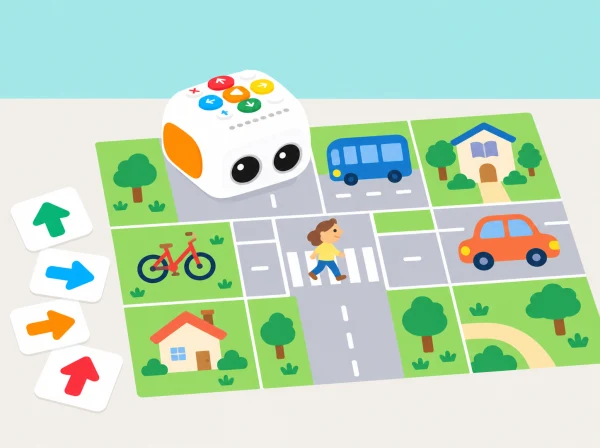

Com podem traçar un recorregut pel barri que siga fàcil de seguir, segur i còmode per a diferents persones?
Partim de la temàtica de cotxes de les etiquetes interactives de l’Activity Box per imaginar carrers compartits. Tale-Bot es mou per un mapa pla de l’aula; l’equip decideix com connectar habitatges, biblioteca, plaça i transport públic, i com representar un pas de vianants accessible. Els cotxes apareixen com a dibuixos i no hi ha cap moviment de vehicles reals.
Prepareu una graella amb interseccions amples, targetes pròpies de llocs del municipi i peces planes que representen bancs, arbres o obres. Incloeu opcions de transport diverses. No poseu obstacles al pas del robot ni feu l’activitat en una via pública. L’ús de l’adhesiu temàtic de cotxes és opcional i depén de la disponibilitat del centre.
Valoreu que l’alumnat puga ordenar ordres, anticipar el resultat, rectificar un error i comparar dues rutes amb criteris explícits. Guardeu el plànol, els programes i una breu explicació de la decisió. No es pressuposa que la maqueta prove l’accessibilitat o la seguretat d’un carrer real.
Oferiu un mapa amb relleu, poques interseccions i símbols d’alt contrast; permeteu respostes amb gestos, pictogrames o explicació oral. Els rols de planificació, programació, registre i presentació roten, i qualsevol equip pot proposar una ruta alternativa sense competir en temps.
La temàtica parteix dels adhesius de cotxes de l’Activity Box oficial de Tale-Bot Pro. Aquesta és una ampliació didàctica pròpia, no una activitat numerada de les 42 Activity Cards ni una reproducció del mapa o les instruccions de veu originals. El robot conserva la funció real de programar el moviment per botons; les normes de circulació i accessibilitat es treballen en paper.